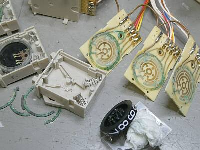
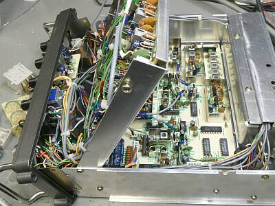
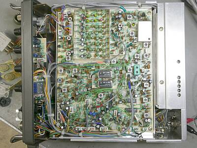
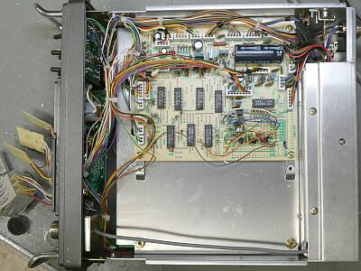
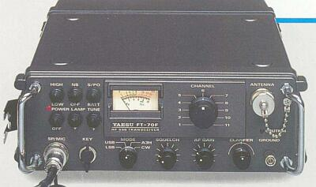
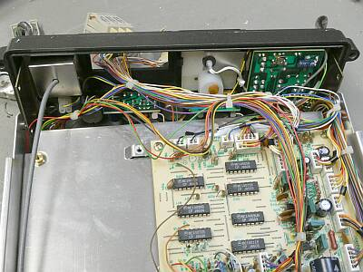

 |
まずは、サムホール・スイッチ解体中の様子から
ご覧のように、腐食による緑青の発生がひどく、全く使い物にならない状態です
１０MHｚ台の切替は、０－２までの範囲に可動範囲が限定されていますが、これは黒いダイヤルの軸のところにストッパー・ピン（よく見ると、ピン２本が見える）が取り付けられていて、このもので回転範囲を制限してあります
この細工は、スイッチ組み立ての最初に行う必要があり、今回は汎用品に交換ですから、この制限がかかりません
使用するうえで、分かっていれば良いことですHi |
 |
全体構成ですが、基板３枚＋ファイナル部です
ご覧のように、ＲＦ／ＩＦユニットを持ち上げると、その下にＰＬＬユニットがあります
|
 |
筐体ケースを取り外すと、下側にＲＦ／ＩＦユニットがあります
この基板を持ち上げると、上記の状態になります
ＩＦフィルタは、ＵＳＢ／ＬＳＢ ２つを装備（基板中央）
周波数読取はカーソル一本です
ＡＭ（Ａ３Ｈ）は、ＵＳＢフィルタが採用されています（輸出モデルからしてそうでしょう） |
 |
反対側、上面です
ＲＥＧ／ＣＮＴＬユニットが１枚配されています
残りの下半分はオプション・スペース
海外向けには、同じシリーズにＦＴ-７０Ｆという固定11Chのモデルがあったようで、このスペースはその周波数をセットするダイオード・マトリックス基板のためにあるようです
アンテナ・チューナーにも、この11Chプリセットに対応したオプションがあったようです |
 |
固定11Ch仕様の兄弟機、ＦＴ-７０Ｆです
リーフレットからの切り取りです
この構造なら、少々の雨を気にする必要もなさそうで
軍用、業務用をうたうのはこのモデル
サムホイール・スイッチモデルは、いわば汎用
という切り分けかもしれません |
 |
お話を戻して
ＦＴ-７０ＧＣのフロント・パネル裏の様子
アンテナ端子の裏は、シールドされていますが、中は普通に１．５D-２ＶがＭ-Ｒに半田付けしてあります
照明はメータのみが対象で、底面の電源供給配線で常時点灯もできるようになっています（通常は、フロントパネルのスイッチ操作で点灯） |
本機について、軍用？みたいな紹介もあるようですが、中のつくりはアマチュア無線機と大差ないように思われます（確かに海外の取説などを見ると、軍用なども意識していたことは想像できます）
シャーシにアルミが採用されている点は、軍用（業務用）を意識した感があります
サムホイール・スイッチによる周波数選択ですから、固定周波数の運用には便利でしょうが、アマチュア無線で一般的な運用・・・ダイヤルを回して選局するうような使い方には不向きといえるでしょう
周波数を取り決めて運用するには便利というか安心というか、そのメリットはあるでしょう
ＭａｎＰａｃｋ いわゆる人が持って（移動しながら）運用することを目的とした、２－３０MHｚゼネラル・カバレッジのＨＦトランシーバということでしょう |
|
スピーカー・マイクロホンは、傷んでいましたが、本体外観は見た目にそんなに傷んだ感はしません
筐体内部は非常にきれいな状態です
が、サムホイール・スイッチの腐食は半端ではありません
接点クリーナーで、なんとなるレベルではありません
これが手にした最初の状況でした
サムホイール・スイッチについては１０MHｚ台が、たまにまじめに動作して、１０．００００ＭＨｚちょうどと、２０．００００ＭＨｚちょうどが送受出来る状態になる・・・その折は、パワーも感度もそれなりに正常という状況で、基本的な送受信に問題はなさそうです
まずは、サムホイール・スイッチの手配から対応をスタートです
幸いなことに、オムロン製で入手が可能でした
入手したサムホイール・スイッチですが、１０MHｚ台から順に1個取り換えては、ＰＬＬロックが外れない確認と周波数を計ってみる・・・機能回復を確認、楽しいですねぇ、1桁ずつ改善です
これを１００Ｈｚ台まで繰り返しました
無事、全６桁交換ができました
特別な手入れを行うこと無く、オリジナル同等のスペックが得られました
昨今の７．１００ＭＨｚ以上でしたら、１０ＫＨｚ／ＫＨｚダイヤルだけで、普通に実用になるかもです
以下、１２．０Ｖ時動作の実測例
周波数：１４．１ＭＨｚ
送信（Ａ２）：Ｈｉｇｈ １１．５Ｗ Ｌｏｗ ３．７Ｗ
Ａ３Ｈ：Ｈｉｇｈ ４Ｗ Ｌｏｗ ２Ｗ
受信感度：ＳＳＢ／ＣＷ ０．２μＶ信号ＯＮ／ＯＦＦ Ｓ／Ｎ１０ｄｂ
ＡＭ １．０μＶ １ＫＨｚ３０％変調 ＯＮ／ＯＦＦ Ｓ／Ｎ１０ｄｂ
音色は固いというか、その昔のＦＴ-１０１の音です
|
スピーカー・マイクロホン ＭＨ-１７Ａ８
結構な損傷があり、手持ちのハンドセットの改造、あるいはなにか新たにスピーカー・マイクを入手して、手当てすることを考えました
まあと思って分解してみると、スピーカーのマグネットに引かれて、ホチキスの針と金属片がスピーカー・コーンにくっついていました
コーンの材質はプラスチック、中心部は凹んでいます
これらが１０１のような受信音に関係したなと考え、手当てをしてみることにしました
紙のコーンで、同サイズ１Ｗ入力のスピーカーの手持ちがあったので、このものに交換
破れていた保護用のシートや、組み入れられていなかった金属金網も、手持ちの古いマイクロホンを分解して部品取りして交換・追加しました
防水性は、オリジナルより低下するかもしれませんが、音色は落ち着きましたので、見た目はよろしくありませんが、改造？したこのＭＨ-１７Ａ８をそのまま使用することにしました |